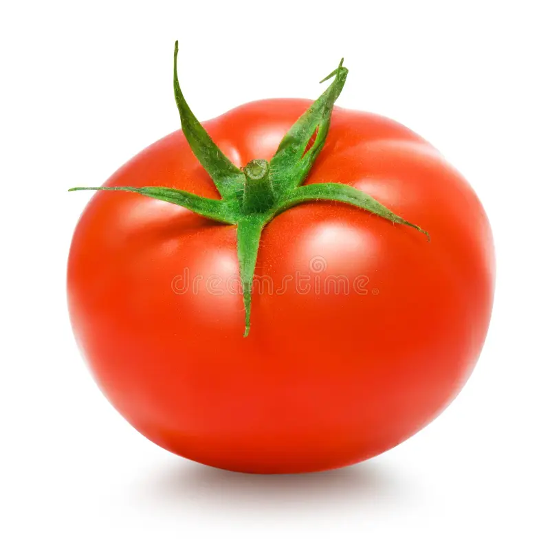

1. Seasons for Growing Tomatoes

Tomatoes are warm-season crops that thrive in sunny, frost-free conditions. The best seasons for growing tomatoes are:
- Spring: Plant tomatoes in early spring (March to April) after the last frost when temperatures are consistently above 50°F (10°C).
- Summer: In cooler climates, tomatoes can also be planted in early summer for a continuous harvest.